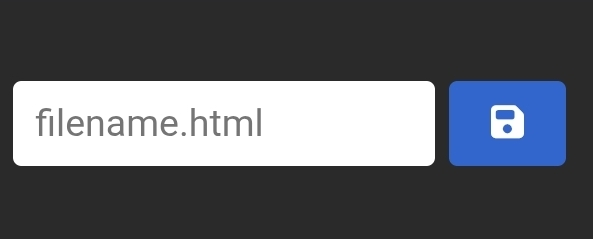
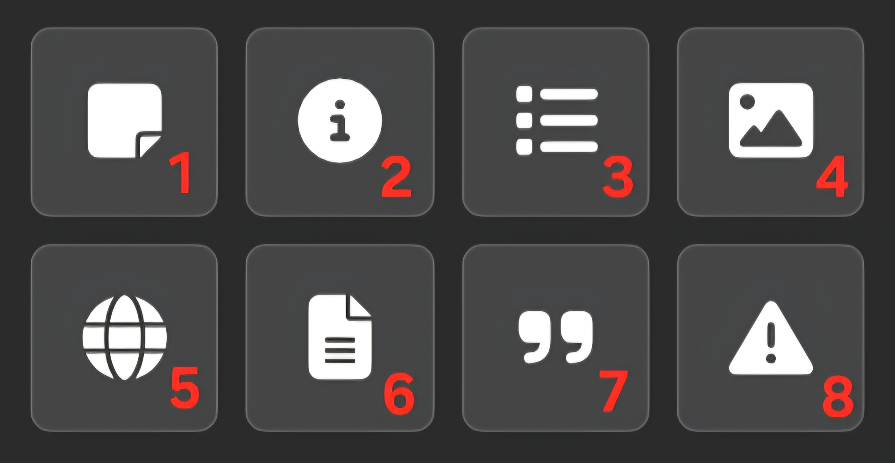
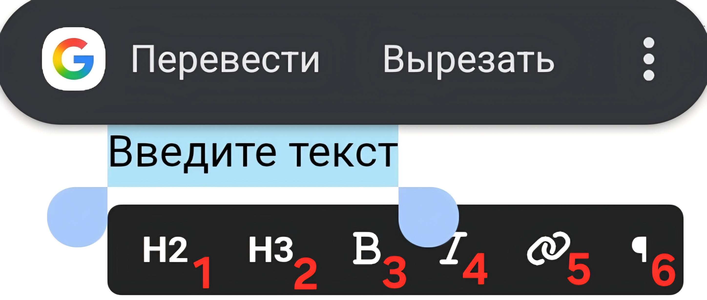

Как создать статью
Краткая инструкция
-
Шаг 1
Зайти в редактор
-
Шаг 2
Написать свою статью
Важно: не перезагружайте и не покидайте страницу во время написания статьи Шаг 3
Сохранить статью и получить файл
Шаг 4
Отправить файл статьи и все изображения, которые использовались
После одобрения статья будет добавлена на Орден Вики
Как пользоваться редактором
Меню вставки

-
1 - вставить примечание
- 2 - вставить инфобокс
- 3 - вставить список
- 4 - вставить изображение
- 5 - вставить окно с открытым сайтом
- 6 - вставить серую рамку для текста
- 7 - вставить цитату
- 8 - вставить предупреждение
Меню редактирования текста

-
1 - заголовок
-
2 - подзаголовок
- 3 - жирный
- 4 - курсив
- 5 - добавить ссылку в текст
- 6 - обычный текст